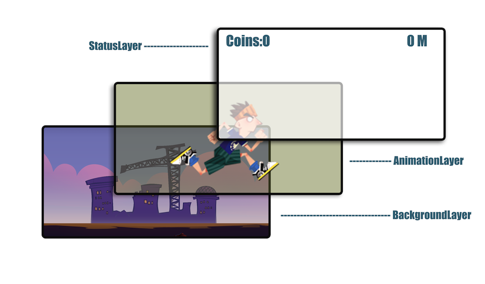
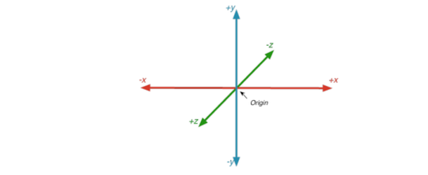
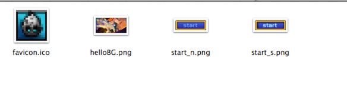

Making Your First Game Scene
Before creating the first scene for your game, you should be familiar with some basic concepts of Cocos2d. If you are already familiar with these concepts, you can skip to the next section.
Basic concepts
In a Cocos2d game, every element is a node. The game is constructed mostly by three kinds of nodes:
-
Scene
-
Layer
-
Sprite
For now we will focus on the Layers in this game, you can find more details about the Scene and Sprite here.
Layer
A cc.Layer is a cc.Node which knows how to draw itself and may be semi-transparent, allowing players to see other layers behind them. cc.Layer is very useful for defining your game's appearance and behaviour, so it will take a lot of time to deal with cc.Layer subclasses to reach your expectation.

While complex applications will require you to define custom cc.Layer subclasses, Cocos2d provides several predefined layers. Some examples include cc.Menu (a simple menu layer), cc.ColorLayer (a layer that draws a solid color), and cc.LayerMultiplex (a layer that lets you multiplex its children, activating one at a time while disabling the others).
Layers may contain any cc.Node as a child, including cc.Sprite, cc.Label, and even other cc.Layer objects. Because layers are a subclass of cc.Node, they can be transformed manually or by using a cc.Action.
Coordinate system
Cocos2d-JS uses the same coordinate system as OpenGL, which is the so-called “Right-handed Cartesian Coordinate System”. It is popular in the gaming industry, however, it is different from the traditional top left coordinate system which used in web-page design.

More details about the coordinate system can be found here.
Anchor point
The anchor point is used for both positioning and rotation of an object. The anchor point's coordinate is a relative coordinate. For example, the anchor point in position (0, 0), which we always define in Cocos2d-x as cc.p(0 , 0), corresponds to the most bottom-left point of that object, while cc.p(0.5, 0.5) corresponds to the center of the object. When setting the position of an object, the object is positioned such that the anchor point will be at the coordinates specified with the setPosition() call. Similarly, when rotating the object, it is rotated around the anchor point.
The properties can be set as attributes in Cocos2d-JS v3.0.
For example, this sprite has an anchorPoint of cc.p(0, 0) and a position of cc.p(0,0):
// create sprite
var sprite = new cc.Sprite ( "bottomleft.png" ) ;
sprite.attr({
x: 0,
y: 0,
anchorX: 0,
anchorY: 0
});
this.addChild ( sprite ) ;
Action
More details about Actions can be found here.
Example of moving a sprite using the cc.MoveBy action:
// Move a sprite 50 pixels to the right, and 10 pixels to the top over 2 seconds.
sprite.runAction(new cc.MoveBy(2, cc.p(50, 10)));
Animation
More details about Animations can be found here.
Example of playing an animation:
var animation = new cc.Animation ( ) ;
for ( var i = 1 ; i < 15 ; i ++ ) {
var frameName = "res/Images/grossini_dance_" + ( ( i < 10 ) ? ( "0" + i ) : i ) + ".png" ;
animation.addSpriteFrameWithFile ( frameName ) ;
}
animation.setDelayPerUnit ( 2.8 / 14 ) ;
animation.setRestoreOriginalFrame ( true ) ;
var action = new cc.Animate ( animation ) ;
sprite.runAction ( new cc.Sequence( action, action.reverse ( ) ) ) ;
Scheduler and Timer callbacks
More details about Scheduler and Timer Callback can be found here.
EventManager
Cocos2d-JS v3.0 migrated a new mechanism for responding to user events.
The basics:
- Event listeners encapsulate your event processing code.
- Event Manager manages listeners of user events.
- Event objects contain information about the event.
To respond to events, you must first create a cc.EventListener. There are five different kinds of EventListeners:
- cc.EventListenerTouch - responds to touch events
- cc.EventListenerKeyboard - responds to keyboard events
- cc.EventListenerAcceleration - responds to accelerometer events
- cc.EventListenMouse - responds to mouse events
- cc.EventListenerCustom - responds to custom events
Then, attach your event processing code to the appropriate callback on the event listener (e.g. onTouchBegan for EventListenerTouch listeners, or onKeyPressed for keyboard event listeners).
Next, register your EventListener with the cc.eventManager.
When events occur (for example, the user touches the screen or types on the keyboard), the cc.eventManager distributes Event objects (e.g. EventTouch, EventKeyboard) to the appropriate EventListeners by calling your callbacks. Each Event object contains information about the event (for example, the coordinates where the touch occurred).
Please refer to EventManager for more details.
Making the game scene
In last tutorial, we have analysed the execution path of a Cocos2d-JS game. Our first game scene is loaded in the function cc.game.onStart of main.js. Here is the code snippet which does the real trick:
cc.game.onStart = function(){
cc.view.setDesignResolutionSize(480, 320, cc.ResolutionPolicy.SHOW_ALL);
cc.view.resizeWithBrowserSize(true);
//load resources
cc.LoaderScene.preload(g_resources, function () {
cc.director.runScene(new HelloWorldScene());
}, this);
};
Here, we use cc.LoaderScene to preload the resources of our game and after loading all resources, the director will run our first scene.
Note:
The cc.game is actual game object which will initialize game configuration and launch games.
Cleanup work
Before we can create our own scene, we need to clean some stuff up.
Cleanup the app.js
This process is very simple. First, we should delete all the contents of app.js, because we will rewrite it from scratch.
Secondly, we should change this line in main.js:
cc.director.runScene(new HelloWorldScene());
to
cc.director.runScene(new MenuScene());
When the game starts, we want to run the MenuScene which we will define instead of the HelloWorldScene.
At last, we should add the resources for our scene and define some resource variables for easy access.

Open resource.js and change its content to:
var res = {
helloBG_png : "res/helloBG.png",
start_n_png : "res/start_n.png",
start_s_png : "res/start_s.png"
};
var g_resources = [
//image
res.helloBG_png,
res.start_n_png,
res.start_s_png
];
Define your first scene, the MenuScene
Open app.js and start to define the MenuLayer:
var MenuLayer = cc.Layer.extend({
ctor : function(){
//1. call super class's ctor function
this._super();
},
init:function(){
//call super class's super function
this._super();
//2. get the screen size of your game canvas
var winsize = cc.director.getWinSize();
//3. calculate the center point
var centerpos = cc.p(winsize.width / 2, winsize.height / 2);
//4. create a background image and set it's position at the center of the screen
var spritebg = new cc.Sprite(res.helloBG_png);
spritebg.setPosition(centerpos);
this.addChild(spritebg);
//5.
cc.MenuItemFont.setFontSize(60);
//6.create a menu and assign onPlay event callback to it
var menuItemPlay = new cc.MenuItemSprite(
new cc.Sprite(res.start_n_png), // normal state image
new cc.Sprite(res.start_s_png), // select state image
this.onPlay, this);
var menu = new cc.Menu(menuItemPlay); //7. create the menu
menu.setPosition(centerpos);
this.addChild(menu);
},
onPlay : function(){
cc.log("==onplay clicked");
}
});
Let's go through all the details from 1-6:
- It calls the init function of its super class.
- Get the screen size of you game.
- Calculate the center point of your screen which will be used to center background images.
- Create a background image using a file name and set its position to the center of the screen. Then, add the sprite to MenuLayer as a child.
- Call the MenuItemFont's setFontSize function to adjust the font size. It is not used in this example, but if you want to use MenuItemFont to create some menu items, it will affect the menu item label size.
- Create a menu with two images, one for the normal state and another for the selected state. Then the menu's position is set to the center of the screen. At last, the menu is added to the current layer.
We should also define a Menu scene:
var MenuScene = cc.Scene.extend({
onEnter:function () {
this._super();
var layer = new MenuLayer();
layer.init();
this.addChild(layer);
}
});
The process of creating a MenuScene is very straightforward. You defined a variable which derived from cc.Scene. You should remember the sign extend, which is used for external classes.
Once the scene is created, the onEnter function should be defined. It defines the MenuLayer as it's child. We can also define a ctor function instead of the onEnter function. The onEnter function is called after ctor function.
Summary
In this tutorial, you were introduced to the basic concepts of programming Cocos2d-JS games. You were also giving a detailed explanation of how to set up your first game scene. We hope you enjoyed it! The related sample project can be downloaded here. It only includes user part and doesn't includes frameworks. You could use them to replace the corresponding parts of Cocos2d-JS template.
Where to go from here
In the next chapter, you will learn how to define your game scene with the various game layers, how to design these layers and what the responsibility of each layer is.